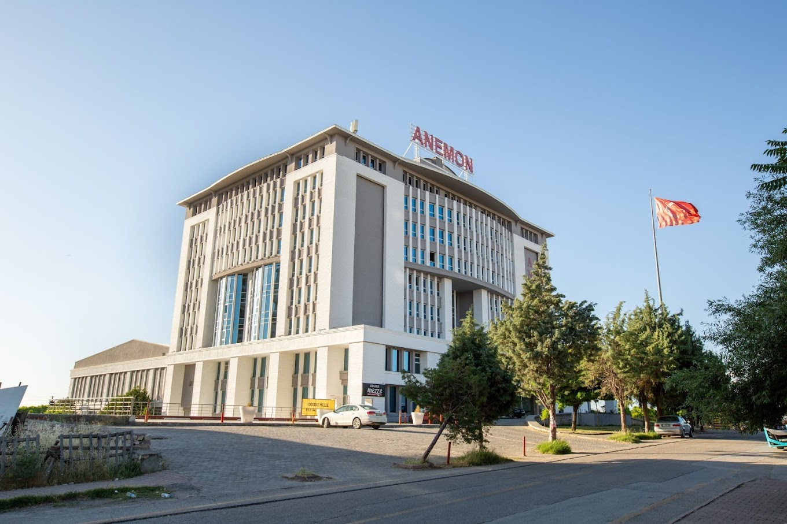
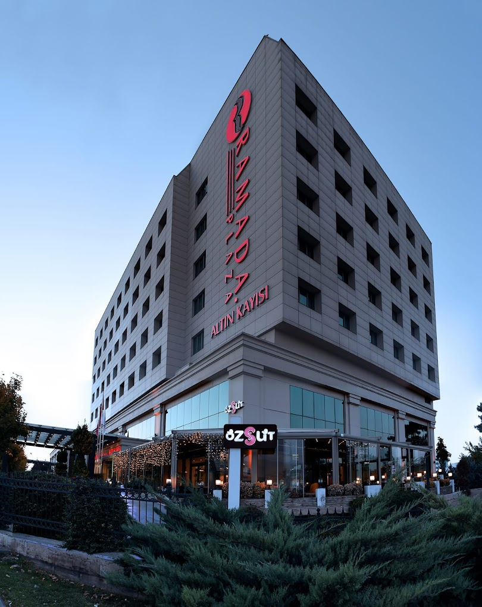
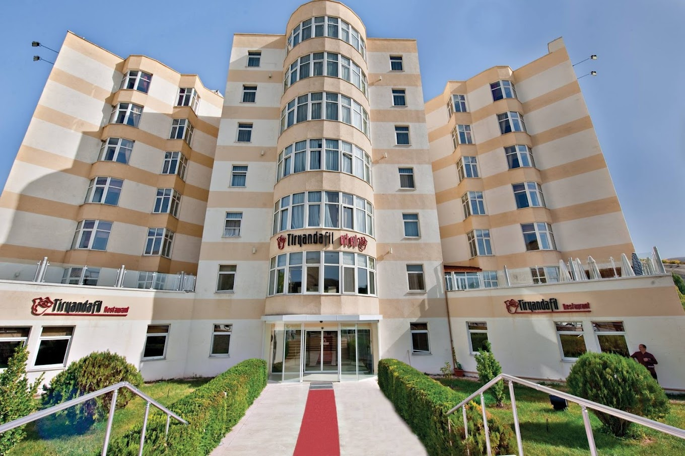

Mövenpick Malatya Hotel
Mövenpick Malatya Hotel
0422 377 70 00
Yeşilyurt/Malatya
Web sitemiz
Hakkımızda
Malatya merkezinde İnönü Caddesi üzerinde şehre hakim bir konumda bulunan DoubleTree by Hilton Malatya; üst
düzey konaklama olanakları, güler yüzlü profesyonel personeli ve 202 modern odasıyla hizmet veriyor. Teras
barından harika bir şehir manzarası sunan DoubleTree by Hilton Malatya, merkezi konumundan dolayı iş
seyahatleri ve tatil konaklamaları için ideal bir tesis. 3 tane restoranı ve 2 tane barı bulunan otelde Türk
mutfaklarından özenle seçilmiş eşsiz lezzetleri tatma şansı da bulacaksınız.
24 saat açık spor salonu, kapalı bir yüzme havuzu, tam donanımlı spa hizmetleri, sauna, Türk hamamı, buhar
odası ve masaj hizmetleri de sağlayan DoubleTree by Hilton Malatya’da iş toplantıları, kongreler ve
konferanslar için son teknolojiyle donatılmış geniş bir konferans merkezi, yüksek hızlı kablosuz internet ve
ücretsiz otopark da bulabilirsiniz.
Çocuklu aileler için profesyonel personeliyle bebek veya çocuk bakım hizmetleri de sağlayan DoubleTree by
Hilton Malatya, şehrin önemli noktalarına kısa yürüyüşlerle ulaşabileceğiniz bir konumda yer alıyor. Otelden
alışveriş yapabileceğiniz MalatyaPark AVM’ye 5 dakika, Dedekorkut Parkı’na 15 dakika, Malatya Müzesi’ne 30
dakika, Malatya Etnoğrafya Müzesi’ne 32 dakika, Aslantepe Harabeleri ve Aslantepe Harabeleri gibi tarihi
yerlere de 40 dakikada yürüyerek ulaşabilirsiniz.
Daha fazla bilgi
Turizim Bakanlığı Tesis Bilgileri
- Belge No: 12565
- Belge Türü: Turizim İşletmesi Belgesi
- Tesis Türü: Otel
- Sınıfı: 5 Yıldızlı
Otel Özellikleri
Genel
- Danışma
- Hediyelik eşya mağazaları ve gazete bayii
- Çamaşırhane
- Genel alanlarda televizyon
- Bahçe
- Resepsiyon emanet kasası
- Lobide ücretsiz gazete
- 24 saat açık resepsiyon
- Oda hizmetçisi/belboy
- Kuru temizleme
- Düğün organizasyonu
- Sigara içmek için özel alanlar
- Bilgisayar istasyonları
- Çatı Terası
- Valiz dolabı
- Teras
- Otelde otopark
- Komi servisi
- Geç çıktı (ücretli)
- Balo salonu
Sağlık ve Spa
- Kuaför salonu
- Otelde spa hizmetleri
- Tam donanımlı spa
- Buhar odası
- Sauna
- Hamam
- Masaj
- Spa merkezi
- Türk Banyosu (Hamam)
Aktivite
- Yakında bisiklet kiralama
- Otelde bisiklet kiralama
- Yerel halka ait ve yerel halk tarafından
düzenlenen turlar ve etkinlikler
- Yerel
Havuz ve Plaj
- Çocuk Havuzu
- Yüzme Havuzu
- Kapalı Yüzme Havuzu
- Havuz şezlongları
İnternet
- Kablolu internet
- Wi-Fi (ücretli)
- Genel alanlarda internet erişimi yüksek hızlı
Balayına özel
- Teklif/romantik organizasyon paketleri
- Çiftlere özel yemek servisleri
Çocuklara Özel
- Bebek veya çocuk bakım hizmeti (ücretli)
Yeme ve İçme
- Restoran
- Barbekü ızgarası/ızgaraları
- Genel alanlarda kahve/çay
- Snack bar/büfe
- Su sebili
- Açık büfe kahvaltı
- Alakart akşam yemeği
- Vejeteryan kahvaltısı sunulmaktadır
- Vegan menü seçenekleri bulunmaktadır
- Organik yiyecekler
Oda
- Tekerlekli sandalye kullanımına uygun
- Minbar(ücretli)
- Odada emanet kasası
- Oda servisi
- Yatak odası sayısı
- Kat hizmeti yok
- İstek üzerine kat hizmeti
- İstek üzerine kat hizmeti
- Çevre dostu temzizlik ürünleri sağlanır
İş/Business
- konferans alanı
- Ofis
- 24 saat ofis
Spor
- Spor salonu
- 24 saat açık spor salonu
- Fitnes
Erişebilirlik
- Asansör
- Engellilere uygun banyo
- Tekerlekli sandalye kullanımına uygun
- Tekerlekli sandalye kullanımına uygun danışma
masası
- Tekerlekli sandalye kullanımına uygun kayıt
masası
- Tekerlekli sandalye kullanımına uygun dinlenme
salonu
- Tekerlekli sandalye kullanımına uygun otopark
- Tekerlekli sandalye kullanımına uygun minibüs
otoparkı
- Tekerlekli sandalye kullanımına uygun spa
- Tekerlekli sandalye kullanımına uygun ortak
tuvalet
- Tekerlekli sandalye kullanımına uygun asansör
yolu
- Braille alfabesi veya işaret dili
- Tekerlekli sandalye kullanımına uygun spor
salonu
- Tekerlekli sandalye kullanımına uygun toplantı
alanları/ofis
- Yardımcı dinleme cihazları bulunur
- Tekerlekli sandalye kullanımına uygun otel
restoranı
Ters Çevresindeki Yerler
Yakında neler var ?
- Malatya İnönü Stadyumu 2,7 km
Tarihi ve Turistlik yerler
- Sümer Park 0,7 km
- Dedekorkut Parkı 1,0 km
- Malatya Etnografya Müzesi 2,1 km
- Malatya Müzesi 2,3 km
- Silahtar Mustafa Paşa Kervansarayı 10,2 km
Alışveriş yapabileceğiniz terler
En yakın havalimanları
- Erha Havalimanı 4,0 km
- Malatya Havalimanı 19,7 km
- Adıyaman Havalimanı 66,6 km
Adres
Heyiketeği, Somuncubaba Blv. No:84, 44700 Darende/Malatya, Turkey /Yok Darende, Malatya

Anemon Hotel
0422 327 23 10
Yeşilyurt/Malatya
Web sitemiz
Hakkımızda
Anemon Malatya, şehir merkezine kolay erişilebilir konumu ve bünyesinde sunduğu olanaklarla hem Malatya’yı
gezip görmek isteyen hem de iş seyahati için yolu Malatya’dan geçen misafirlere konforlu bir konaklama
seçeneği bulunuyor. Otel 161 oda kapasitesiyle hizmet verirken bu odalardan 135 adedi sigara içen
misafirlere ayrılmış.
Malatya merkezine 6 kilometre uzaklıkta bulunan otel, şehir oteli olma özelliğiyle bölgenin doğal ve tarihi
güzelliklerinden Nemrut Dağı, Akçadağ Levent Vadisi, Sultan Suyu Harası, Battalgazi Aslantepe Höyüğü ve
Battalgazi Ulu Cami, Zengibar Kalesi, Beşkonaklar Kudeb, Tarihi Tahtalı Hamamı, Hürriyet Parkı, Sanat Sokağı
gibi değerlere araçla ulaşılabilecek bir mesafede konumlanyor.
Aynı zamanda bir kongre oteli olma özelliği taşıyan otelde kapasiteleri 6 kişiden 1300 kişiye kadar değişen
6 adet toplantı ve etkinlik salonları, iş organizasyonları için Malatya’da bulunan misafirlerin
ihtiyaçlarını karşılıyor.
Yoğun geçen günlerin ardından stres atmak isteyen misafirleri ise otel bünyesinde bulunan açık ve kapalı
havuz, fitnes salonu , hamam, sauna gibi imkanlar ve 2500 metrekarelik açık alana serpiştirilmiş kamelyalar
bekliyor.
Malatya’ya toplu taşıma ile ulaşan misafirler için de elverişli bir konumda bulunan otel, Malatya Otobüs
Terminali’nden 4 kilometre, Malatya Havaalanı’ndan ise 14 kilometre uzaklıkta yer alıyor.
Daha fazla bilgi
Turizim Bakanlığı Tesis Bilgileri
- Belge No: 11049
- Belge Türü: Turizim İşletmesi Belgesi
- Tesis Türü: Otel
- Sınıfı: 5 Yıldızlı
Otel Özellikleri
Genel
- Hediyelik eşya mağazaları ve gazete bayii
- Çamaşırhane
- Genel alanlarda televizyon
- Bahçe
- Resepsiyon emanet kasası
- 24 saat açık resepsiyon
- Oda hizmetçisi/belboy
- Sigara içmek için özel alanlar
- Ücretsiz vale otopark
- Valiz dolabı
- Araba kiralama
- Banket salonu
Yeme ve içme
- Genel alanlarda kahve/çay
- Bar
- Kapalı bar
- Kapalı restorant sayısı
- Havuz kenarı bar
İş/Business
- Kopnferans alanı
- Ofis
- Toplantı odaları
- 24 saat ofis
Aktivite
- Bilardo masası
- Disco(Ücretli)
- Yakında scooter/moped kiralama
Otopark ve Transfer
- Uzun süreli otopark
- Ücretisz valesiz otopark
Sağlık ve SPA
- Kuaför salonu
- Sağlık kulübü
- Otelde spa hizmeti
- Tam donanımlı spa
- Buhar odası
- Sauna
- Hamam
- Masaj
- Dotor
Havuz ve plaj
- Kapalı havuz
- Açı havuz
- Çocuk havuzu
- Yüzme havuzu
Konuşulan diller
- Birden fazla dil bilen personel
- İngilizce
- Almanca
- Türkçe
Spor
- Spor salonu
- Otelde fitness sınıfları
İnternet
- Ücretsiz kablosuz internet
- Ücretsiz kablolu internet
Tesis Çevresindeki Yerler
Yakında neler var?
- Malatya İnönü Stadyumu 10,1 km
Tarihi ve turistlik yerler
- Dedekorkut Parkı 6,4 km
- Sümer Park 6,7 km
- Malatya Etnografya Müzesi 9,4 km
- Malatya Müzesi 9,4 km
- Silahtar Mustafa Paşa Kervansarayı 16,3 km
En yakın havalimanları
- Erha Havalimanı 3,9 km
- Malatya Havalimanı 15,2 km
- Adıyaman Havalimanı 65,1 km
Adres
Yakınca, Mehmet Akif Ersoy Cd. NO 27, 44400 Yeşilyurt/Malatya

Ramada Plaza by Wyndham Malatya Altin Kayisi
0422 211 44 44
Yeşilyurt/Malatya
Web sitemiz
Hakkımızda
Ramada Plaza Altın Kayısı, 1992 yılından beri Altın Kayısı Otel adıyla Malatya halkını ve Malatya’nın
misafirlerini ağırlayan köklü bir tesis. 2012 yılında Ramada oteller zincirine dahil olarak yenilenen otel;
modern ve uluslararası standartlardaki hizmet anlayışı, donanımlı toplantı salonları, sağlık merkezi gibi
imkanlarıyla hem seçkin bir konaklama merkezi, hem bölgedeki sayılı kongre merkezlerinden biri olma
özelliğini taşıyor.
154 oda kapasitesiyle hizmet veren otelde bulunan tüm odalar Ramada standartlarındaki konfor kriterlerinin
sağlanarak misafirlerin keyifli bir konaklama geçirmesi için düzenlenmiş.
Oda kahvaltı hizmeti sunan otelde açık büfe kahvaltı öğünlerinde ve A la Carte olarak sunulan öğlen ve akşam
öğünlerinde yöresel lezzetler ve dünya mutfağından seçkiler misafirlerle buluşuyor.
Ramada Plaza Altın Kayısı, iş seyahati ve organizasyonlar için ise kendine ait fuaye ve teras alanıyla
Kardelen Balo Salonu, ses geçirmez hareketli duvarlarıyla ikiye bölünebilen etkinlik salonu, 2 farklı
toplantı salonu ve bir de toplantı odasıyla her çaptaki iş toplantısı, konferans, davet ve sergi
organizasyonu için hizmet verebilir kapasitede.
Malatya’nın ana arterlerinden olan Ankara Caddesi üzerinde yer alan Ramada Plaza Altın Kayısı, Malatya
Otobüs Terminali’nden 4 kilometre, Malatya Havalimanı’ndan ise 25 kilometre uzaklıkta yer alıyor.
Daha fazla bilgi
Turizim Bakanlığı Tesis Bilgileri
- Belge No: 13708
- Belge Türü: Turizim İşletmesi Belgesi
- Tesis Türü: Otel
- Sınıfı: 5 Yıldızlı
Otel Özellikleri
Genel
- Danışma
- Çamaşırhane
- Bahçe
- Resepsiyonda emanet kasası
- Lobide ücretisz gazete
- 24 saat açık resepsiyon
- Oda hizmetçisi/belboy
- Düğün organizasyonu
- Ücretsiz vale otopark
- Valiz dolabı
- Teras
- Engelli odaları
- Balo salonu
- Sigara içilmeyen konaklama yeri
Yeme ve içme
- Kahvaltı servisi var(ücretli)
- Servis(ücretli)
- Kapalı restorant sayısı
İş/Business
- Kopnferans alanı
- Ofis
- Toplantı odaları
Sağlık ve SPA
- Kuaför salonu
- Sağlık kulübü
- Otelde spa hizmeti
- Tam donanımlı spa
- Buhar odası
- Sauna
- Hamam
- Masaj
- Dotor
Havuz ve plaj
- Kapalı havuz
- Açık havuz
- Yüzme havuzu
Konuşulan diller
- Birden fazla dil bilen personel
- İngilizce
- Türkçe
İnternet
- Ücretsiz kablosuz internet
- Ücretsiz kablolu internet
- Genel alanlarda internet erişimi yüksek hızlı
Tesis Çevresindeki Yerler
Yakında neler var?
- Malatya İnönü Stadyumu 3,9 km
Tarihi ve turistlik yerler
- Dedekorkut Parkı 0,2 km
- Sümer Park 0,5 km
- Malatya Etnografya Müzesi 3,3 km
- Malatya Müzesi 3,5 km
- Silahtar Mustafa Paşa Kervansarayı 11,0 km
En yakın havalimanları
- Erha Havalimanı 2,9 km
- Malatya Havalimanı 18,7 km
- Adıyaman Havalimanı 66,5 km
Adres
Özalper, İstasyon Cd. No:24, 44090 Malatya Merkez/Malatya

Riryandafil Hotel
0546 544 60 44
Darende/Malatya
Web sitemiz
Hakkımızda
Tarih, Kültür ve Turizm Şehri Darende'de Kültür ve Turizm Bakanlığı'nın izni ile 2006 yılında hizmete açılan
Otel Tiryandafil, 71 Oda ve 161 yatak kapasitesi ile hizmet vermektedir.
Darende'nin tarihi ve kültürel gezi mekanlarına yakın mesafede bulunan otelimiz; restoran, yüzme havuzu,
sauna ve spor salonuyla siz değerli misafirlerini bekliyor.
Daha fazla bilgi
Turizim Bakanlığı Tesis Bilgileri
- Belge No: 10092
- Belge Türü: Turizim İşletmesi Belgesi
- Tesis Türü: Otel
- Sınıfı: 3 Yıldızlı
Otel Özellikleri
Oda
- Klima
- Telvizyon
- Minibar
- Günlük kat temizliği
- Telefon
- Ücretsiz banyo/kozmetik ürünleri
- Saç kurutma makinesi
- Terlik
- Uydu TV Kanalları
- Elektrikli su ısıtıcı
- Banyo
- Duş
- Makyaj Aynası
- Havlu
- Çalışma Masası
Genel
- Bahçe
- Otelde otopark
- Tesis kapasitesi
- Lobi
- Resepsiyon
Evcil Hayvan
- Evcil hayvana izin verilmez.
En Yakın Havalimanları
- Malatya Havalimanı 55,5 km
- Erha Havalimanı 70,7 km
Adres
Heyiketeği, Somuncubaba Blv. No:84, 44700 Darende/Malatya, Turkey /Yok Darende, Malatya